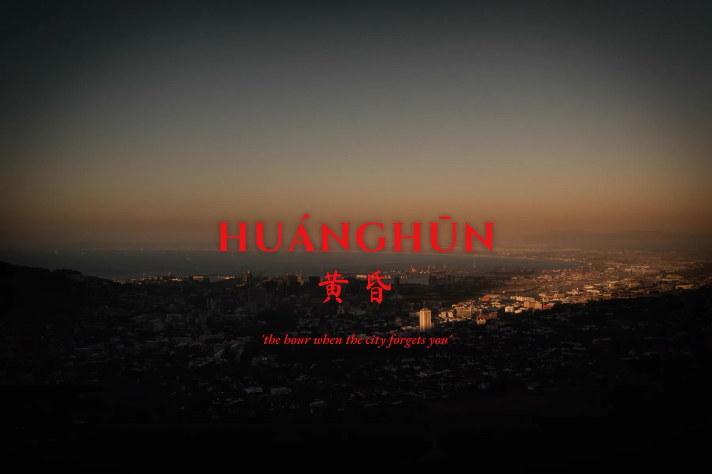
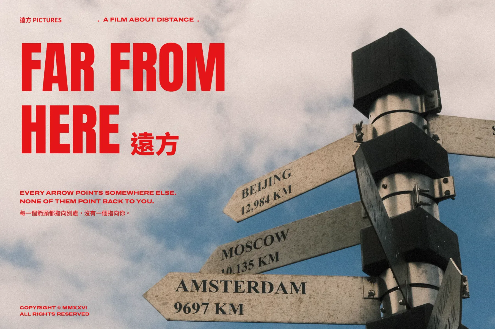
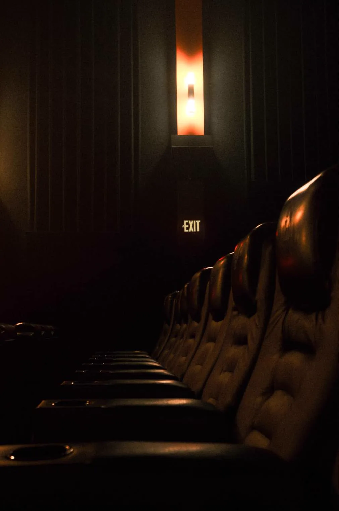
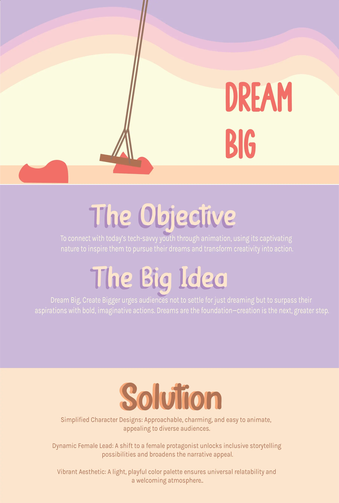

← All work
10 / 13
Photography
Photography that leans cinematic: quiet light, long shadows and frames that feel like a film is about to start.
The series moves from a fashion portrait, bold lip prints set against the calm of the outdoors, to two film-poster studies. Huánghūn 黄昏 looks over a city at dusk, “the hour when the city forgets you.” Far From Here 遠方 is a film about distance, where every arrow points somewhere else. An empty cinema closes the set.



Photography, 2024
Full case study on Behance ↗
Next project11 / 13
Vega
